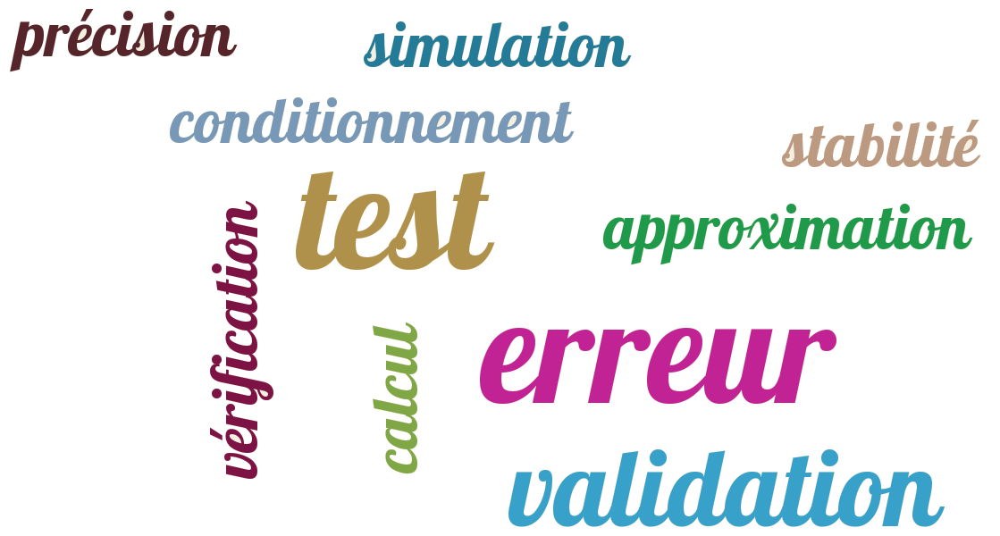

11. Précision et validation#
{kind=link}
%matplotlib inline
from IPython.display import HTML,display,IFrame
from IPython.display import YouTubeVideo,Markdown,Video
11.1. Erreur de représentation#
Les nombres réels n’ont pas de représentation exacte sur un ordinateur
11.1.1. Exemple préliminaire#
Calcul de la somme \(S_n\) de la série convergente:
11.1.1.1. Algorithme#
Algorithme serie(x,n)
term = 1.
somme = 1.
pour i de 1 a n (exclu)
term = term*x/i
somme = somme + term
fin pour
Serie = somme
11.1.1.2. Programme Python#
def serie(x,n) :
term = 1.0
somme = term
for i in range(1,n):
term = term*x/i
somme = somme + term
return somme
11.1.1.3. Applications#
from numpy import exp
x = 1.0
print("Pour x=",x," serie=",serie(x,100)," exp(x)=",exp(x))
x = 100.0
print("Pour x=",x," serie=",serie(x,1000)," exp(x)=",exp(x))
Pour x= 1.0 serie= 2.7182818284590455 exp(x)= 2.718281828459045
Pour x= 100.0 serie= 2.6881171418161336e+43 exp(x)= 2.6881171418161356e+43
x = -1.0
print("Pour x=",x," serie=",serie(x,100)," exp(x)=",exp(x))
x = -100.0
print("Pour x=",x," serie=",serie(x,1000)," exp(x)=",exp(x))
Pour x= -1.0 serie= 0.36787944117144245 exp(x)= 0.36787944117144233
Pour x= -100.0 serie= -2.9137556468915326e+25 exp(x)= 3.720075976020836e-44
Pour \(x < 0\) , la série converge mais numériquement le calcul diverge à cause des erreurs d’arrondis.
11.1.1.4. Solution: utilisation de la propriété \(e^{-x} = 1/e^x \)#
x = -100.0
print("Pour x=",x," serie=",1./serie(-x,1000)," exp(x)=",exp(x))
Pour x= -100.0 serie= 3.7200759760208386e-44 exp(x)= 3.720075976020836e-44
11.1.1.5. Exercice#
On peut améliorer la précision du calcul en notant que pour \(x>0\), on peut écrire:
Réécrire l’algorithme précédent en utilisant cette propriété.
11.1.2. Représentation des nombres sur un ordinateur#
nombre entier exacte (32 bits): \(-2^{31}\le n \le 2^{31}\)
nombre réel: mantisse + exposant:
Réel \(a\neq\ 0\) normalisé = mantisse+exposant
représentation flottante (si \(-N\leq\ q\leq\ M\))
simple précision 32 bits: \(t=7\), \(-45<q<38\)
double précision 64 bits: \(t=15\), \(-324<q<308\)
11.1.2.1. Exemple#
x = 1.
print(x)
s = x+x+x
print(s == 3.)
1.0
True
x =0.1
print(x)
s = x+x+x
print(s == 0.3)
0.1
False
print("s=",s)
print("s=",repr(s))
s= 0.30000000000000004
s= 0.30000000000000004
11.2. Précision des calculs#
11.2.1. Précision machine \(\epsilon\)#
11.2.2. Algorithme de calcul de la précision machine#
Algorithme Precision()
eps = 1.
tant que 1. + eps > 1.
eps = eps/2
fin tant que
Precision = 2*eps
11.2.3. Programme Python#
def Precision():
""" calcul la precision machine """
eps = 1.0
while (1.+eps) > 1.0 :
eps = eps/2.
return 2*eps
print("Precision machine = ",Precision())
Precision machine = 2.220446049250313e-16
11.3. Erreurs numériques#
non associativité de l’addition et soustraction
formule exacte \(\leadsto\) résultats numériques faux
absorption \(x + y = x\) si \(y \ll x\)
11.3.1. Exemple: racine d’une équation du 2nd degré#
11.3.1.1. programme Python de base#
from numpy import sqrt
a = 1.e-8
b = -2.
c = 1.e-8
x1 = (-b + sqrt(b*b-4*a*c))/(2*a)
x2 = (-b - sqrt(b*b-4*a*c))/(2*a)
print("x1=",x1, "x2=",x2)
print("x1*x2=",x1*x2,"# produit=",c/a)
x1= 200000000.0 x2= 1.1102230246251565e-08
x1*x2= 2.220446049250313 # produit= 1.0
11.3.1.2. meilleur approximation#
x2 = c/a/x1
print("x1=",x1, "x2=",x2)
print("x1*x2=",x1*x2,"= produit=",c/a)
x1= 200000000.0 x2= 5e-09
x1*x2= 1.0 = produit= 1.0
11.3.2. Calcul d’erreurs#
11.3.2.1. règles sur les erreurs#
11.3.2.2. condition sur l” erreur relative#
11.4. Conditionnement et erreurs d’approximation#
11.4.1. sensibilité aux erreurs#
Conditionnement sensibilité du résultat à une petite variation des données.
Problème mal conditionné=grande sensibilité vis à vis des données.
Stabilité sensibilité de l’algorithme vis a vis des erreurs numériques
11.4.2. Erreurs d’approximation#
Soit \(U^h\) une approximation de la solution \(U_{ex}\) fonction d’un petit paramètre d’approximation \(h\):
Erreur \(E(h)\)
11.4.2.1. Ordre d’approximation#
Ordre \(O(h^{n})\)
La fonction \(E(h)\) est en \(O(h^{n})\) s’il existe une constante \(C>0\) telle que \(\left|E(h)\right|<Ch^{n}\)
Approximation d’ordre n:
si l’erreur est en \(O(h^{n})\), alors l” approximation est d’ordre n
11.4.3. Exemple: calcul de \(e^a\) avec des tables pour \(0 < a < 1\)#
On précalcule \(n+1\) valeurs \(l_k=\log(1 + 10^{-k})\) ( pour \(k=0,n\) )
On a donc \(e^{l_k} = 1 + 10^{-k}\)
On décompose ensuite \(a\) sous la forme
ce qui donne (en utilisant \(e^{a+b}=e^a e^b \)) :
En approximant \(e^\epsilon \simeq 1+ \epsilon\), on obtiens une approximation de \(e^a\)
avec une erreur relative \(\epsilon^2\)
11.4.4. Algorithme: approximation de exp(a) à l’aide de tables#
Algorithme Exp(a)
n = 8 # nbre de valeurs de la table
L = [ln(1),ln(1+0.1),ln(1+0.01),...ln(1+10^-7)]
x = a # valeur a decomposer (a, a-a0*l0, a-a0*l0-a*l1,...)
y = 1 # valeur de exp(a)
pour k de 0 a n-1
# Calcul de ak par decomposition
# de x = a - a0*L[0]-a1*L[1]-..ak-1*L[k_1]
ak = 0
tant que x>L[k] faire
x = x - L[k]
y = y*(1+10^-k)
ak = ak + 1
fin calcul ak
fin boucle k
# prise en compte du reste ici x
y = y*(1+x)
retour y
11.4.5. Programme Python#
from numpy import exp,log,log1p
# table précalculée
n=8
L=[log(1+10**(-k)) for k in range(n)]
# calcul exp(a)
def Exp(a):
""" calcul approximation y de exp(a)"""
global L,n
x=a
y=1.
dixmk=1. # puissance 10**(-k)
for k in range(n):
while (L[k] <= x):
x = x - L[k]
y = y + y*dixmk
dixmk = dixmk/10.
y=y*(1+x)
return y
# test
a=0.8
print("Erreur relative = ",(exp(a)-Exp(a))/exp(a))
a=0.00008
print("Erreur relative = ",(exp(a)-Exp(a))/exp(a))
Erreur relative = 1.3967950124629484e-15
Erreur relative = 4.4405368413432215e-16
11.4.6. comparaison avec le calcul utilisant les séries entières#
import numpy as np
import matplotlib.pyplot as plt
X = np.linspace(0,1.,100)
Ye = exp(X)
Ya = [Exp(x) for x in X]
Ys = [serie(x,14) for x in X]
# tracer
plt.figure(figsize=(8,4))
plt.subplot(1,2,1)
plt.plot(X,Ye,X,Ya)
plt.title("exp(x)")
plt.subplot(1,2,2)
plt.plot(X,abs(Ya-Ye),label="table n=7")
plt.plot(X,abs(Ys-Ye),label="serie n=14")
plt.legend(loc=0)
plt.title("Erreur")
plt.yscale('log')
plt.show()
Remarques
on peut améliorer la précision en utilisant la fonction numpy log1p(x) qui calcul log(1+x) avec une plus grande précision pour x petit
attention le calcul précis des fonctions élémentaires est un problème complexe (voir l’article sur la précsion de l’instruction fsin des processeurs Intel)
11.4.7. Exercice:#
Utiliser le principe de l’algorithme précédent pour calculer \(log(a)\) pour \(a>1\). On pourra décomposer \(a\) sous la forme:
En déduire une approximation de \(log(a)\) avec une erreur relative de \(\epsilon^2\)
11.5. Vérification des calculs#
une simulation numérique calcule une approximation
toute simulation numérique doit être validée
vérification et validation font partie intégrante du calcul scientifique
La validation d’une simulation numérique peut utiliser
une vérification de la convergence
une comparaison avec une solution analytique ou une solution de référence
11.5.1. validation de la simulation d’alunissage#
comparaison avec une solution analytique
Dans la modélisation de alunissage on a utiliser une approximation de la solution de l’équation du mouvement:
sous la forme
avec \(X=t/t_0\) et \(t_0=M_0/Q_e\)
Cette équation admet une solution analytique:
L’approximation correspond à un DL de \(ln(1-X)\) a l’ordre 5, et l’erreur doit etre en \(\theta(X^7)\)
import numpy as np
import matplotlib.pyplot as plt
# constantes en unité SI (kg/m/s)
g = 1.6 # gravité
Ue = 2900. # vitesse d'ejection
Z0 = 190000. # position
V0 = 1580. # et vitesse
M0 = 15000. # masse initiale du LEM
Me = 8000. # dont une masse de fuel
t = 0. # temps simulation
dt = 10. # pas en temps
Qe = 90. # poussée
t0 = M0/Qe
# calcul distance parcourue DZ
def DZ(t):
X = t/t0
dZ = - V0*t - g*t*t/2. + Ue*t*(X/2. + X*X/6. + X**3/12. + X**4/20. + X**5/30.)
return dZ
# solution exacte
def DZe(t):
X = t/t0
dZ = - V0*t - g*t*t/2. + Ue*(t0-t)*np.log(1-X) + Ue*t
return dZ
# calcul de l'erreur
T = np.linspace(2.,10*dt,100)
Z = np.array([DZ(t) for t in T])
Ze = np.array([DZe(t) for t in T])
Err7 = np.array([t0*(t/t0)**7 for t in T])
#
plt.figure(figsize=(8,4))
plt.subplot(1,2,1)
plt.plot(T,Z,T,Ze)
plt.title("distance parcourue")
plt.subplot(1,2,2)
plt.plot(T,abs(Z-Ze),lw=2,label='err')
plt.plot(T,Err7,'--',label='$O(X^7)$')
plt.legend(loc=0)
plt.xscale('log')
plt.yscale('log')
plt.show()
11.5.2. Validation du calcul de \(exp(a)\) avec \(n\) valeurs tabulées#
vérification de la convergence
erreur relative \(err \simeq \epsilon^2\) avec \(\epsilon \lt 10^{-n}\)
11.5.2.1. programme Python#
import numpy as np
import matplotlib.pyplot as plt
# calcul exp(a) avec une precision 10^-2n
def Exp(a,n):
""" calcul approximation y de exp(a)"""
L=[np.log(1+10**(-k)) for k in range(n)]
x=a
y=1.
dixmk=1. # puissance 10**(-k)
for k in range(n):
while (L[k] <= x):
x = x - L[k]
y = y + y*dixmk
dixmk = dixmk/10.
y=y*(1+x)
return y
#
n=12
N=range(1,n+1)
Y=[10**(-2*k) for k in N]
Err=np.zeros(n)
a=0.5
for i in range(n):
Err[i] = abs(Exp(a,i+1)-np.exp(a))/np.exp(a)
plt.plot(N,Err,'o',label="err")
plt.plot(N,Y,'-',lw=2,label="$10^{-2n}$")
plt.yscale('log')
plt.legend(loc=0)
plt.show()
11.6. Bibliographie#
Calcul des fonctions usuelles sur une calculatrice (blog prépa Dupuis de Lome)
Intel Underestimates Error Bounds by 1.3 quintillion for the fsin instruction
J. P. Demailly. « Analyse Numérique et Equations Différentielles », PUG, 1994.